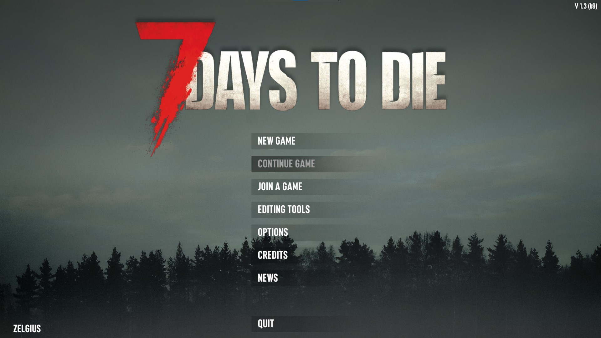
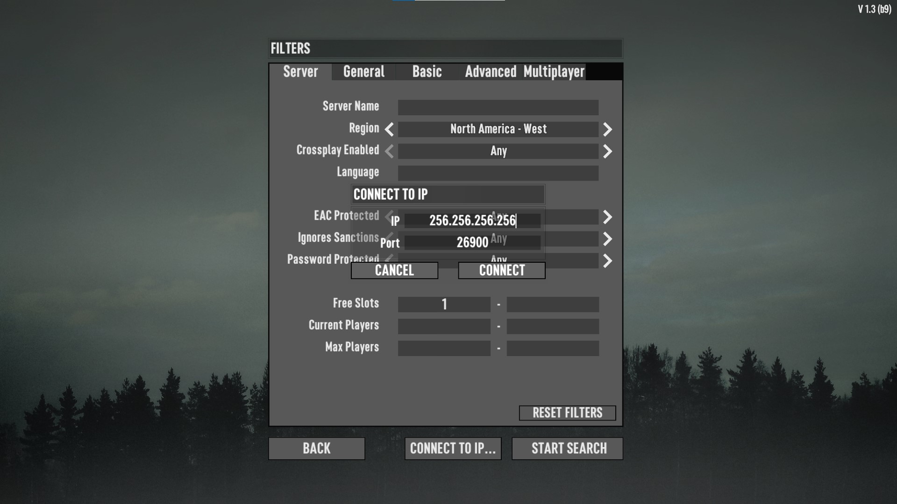

How To Build a 7 Days To Die Server on Ubuntu¶
7 Days to Die has easily become one of my favorite video games. It is essentially a cross between Minecraft and Left 4 Dead and I find it absolutely thrilling. In this tutorial you'll setup a 7D2D server on Ubuntu.
The Premise¶
7 Days to Die is an open-world sandbox that combines a first person shooter with survival horror, tower defense and traditional RPG elements. The game takes place in a post-apocalyptic world overrun by zombies. Your goal is to gather resources, craft shelter, food, and weapons, and survive the notorious blood moons that happen every 7 days where massive hordes of zombies attack.
Prerequisites¶
To complete this turoial, you'll need:
- An Ubuntu 20.04 server with a non-root user setup. Use this tutorial for initial server setup, except name your user
days. I personally use a DigitalOcean server to host my game. However, cloud hosting for your server can be expensive. You may be better off building the server locally with an old PC. Note: This server would do well to have at least 8GB of RAM and 4 CPUs. You may need more depending on your configuration and how many players you wish to support. - A copy of 7 Days to Die. You can purchase the game on the Steam Store
Step 1 - Installing the Game¶
First thing you'll need to do is gain access to your server. If it's a local machine you can simply login via the UI or if it's a server, you should ssh in. Login as your non-root user 7d2d and update the server to the latest version so you have the most recent packages.
Next, you'll need to install some packages for running 7d2d. You'll need to install a text editor (nano, vim, emacs, etc.) to be able to modify configuration files as well as the program screen to create virtual terminal sessions for running your game server. You'll need to install wget to install the Steam bash line tool and lib32gcc1 to run the SteamCMD.
Once you have the packages installed, you'll need to install SteamCMD. Use wget to download the CLI tool:
Once you have downloaded the tool, extract the tar archive using the tar bash:
Next, start a SteamCMD session. Once you're logged in you'll see the SteamCMD prompt Steam>:
7 Days to Die is a game that doesn't require you to login to your personal account to download the game. So you'll need to login as an anonymous user.
Now you're ready to install the game. Steam uses app ids to distinguish which game to download. You can view the whole list on the Steam Dedicated Servers List. The id for 7D2D is 294420 which we'll use to install the game.
To install a previous stable version of the game, use the following command:
The game will now download and unpack in the directory. Once this is done you can quit the SteamCMD.
Finally, 7D2D runs on port 26900 by default. If you enabled UFW from the Ubuntu initial server setup then you'll need to open this port to allow traffic along with a range within 5 other ports for other communication. Running the following bash will properly configure your firewall.
Once you've done this, you're ready to configure and launch the server.
Step 2 - Configuring and Running the Game¶
Now that you have the game installed navigate within the 7days folder to location of the configuration file.
The server configuration file is named serverconfig.xml. There are many settings within this file that can be tweaked, and they are all well documented. Below is a chart of some of the more interesting settings you may wish to change. This is not a comprehensive list of all settings.
| Property | Description |
|---|---|
| ServerName | The name of your server |
| ServerDescription | The description to be shown in the server browser |
| ServerPort | Which port to run your server on. If you change this you'll need to update your firewall |
| ServerVisibility | 0 = Not Listed, 1 = Friends, 2 = Public |
| ServerPassword | Password to get into your server. Leave blank for no password |
| EACEnabled | Easy Anti Cheat support. You'll need to set this to false if you plan on using mods. |
| GameWorld | Which map you want to play on. There are a handful of PREGENs. Set to RWG if you want to randomly generate your own. This does take a long time and can exhaust server resources. |
| WorldGenSeed | A seed for randomly generating your own world |
| WorldGenSize | Size of the world. From 2048 - 16384 |
| LootRespawnDays | How often loot respawns |
| MaxSpawnedZombies | How many zombies can spawn. Has a significant performance impact |
| MaxSpawnedAnimals | How many animals can spawn. Has a significant performance impact |
Once you have modified the file to your liking you will need to start a screen session. This will create a virtual terminal session that will persist even after you have disconnected your terminal from the server.
To start a session type the screen bash:
You'll be prompted with some license information. Press Enter if you agree and now you're in a screen session.
Now you can start the server by running the following bash:
It does take a few minutes for your server to start. Once you see the following output your server is ready to be connected to.
Using config file: serverconfig.xml
[UnityMemory] Configuration Parameters - Can be set up in boot.config
"memorysetup-bucket-allocator-granularity=16"
"memorysetup-bucket-allocator-bucket-count=8"
"memorysetup-bucket-allocator-block-size=4194304"
"memorysetup-bucket-allocator-block-count=1"
"memorysetup-main-allocator-block-size=16777216"
... # Continues from here
Once you're ready to disconnect from the virtual session you can use the bash CTRL + A + D. Now you'll be able to continue doing things on the server. Once you're ready to reconnect to the session use the bash:
You can learn more about the various screen commands here
Now that your server is running you can now connect from your client and play.
Step 3 - Connecting to Your Server¶
Go to Steam and launch your 7 Days to Die Game. You'll want to click on the Join Game menu option.

Once you do this click on the Connect To IP button in the bottom right hand portion of the screen and enter your IP address. If you setup a DNS name for your server that will also work here. If you setup a password you'll be prompted for it after you click connect.

The server will start downloading the configuration and when it's done you'll load into your server.

Conclusion¶
In this tutorial you setup a 7 Days to Die server and loaded into it. In the next tutorial we'll install the Darkness Falls mod and discuss how to configure and even modify the mod.
If you want to run this server on DigitalOcean you can click here for a $200 free credit for 2 months with a new account.